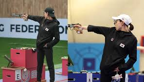

Comienzos de su carrera
Kim comenzó su carrera a los 18 años, en competencias locales, destacándose rápidamente por su habilidad en el campo...
Kim comenzó su carrera a los 18 años, en competencias locales, destacándose rápidamente por su habilidad en el campo...
A los 22 años, Kim fue reclutada por un equipo profesional, lo que marcó un hito en su carrera como atleta profesional...
Kim ha participado en varias competencias internacionales, logrando medallas y distinciones importantes que consolidaron su nombre a nivel mundial...